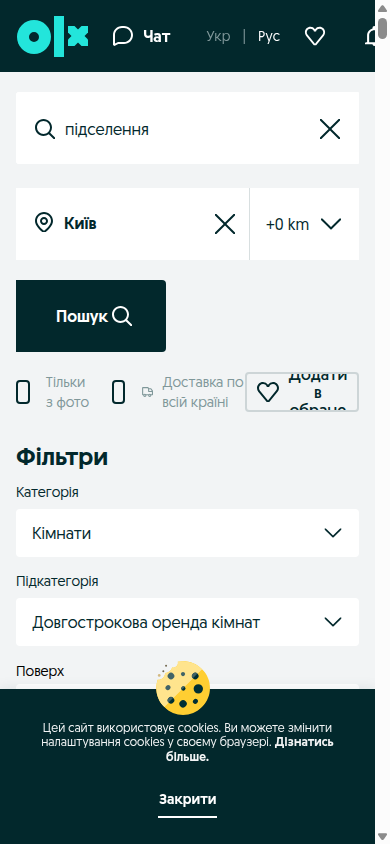
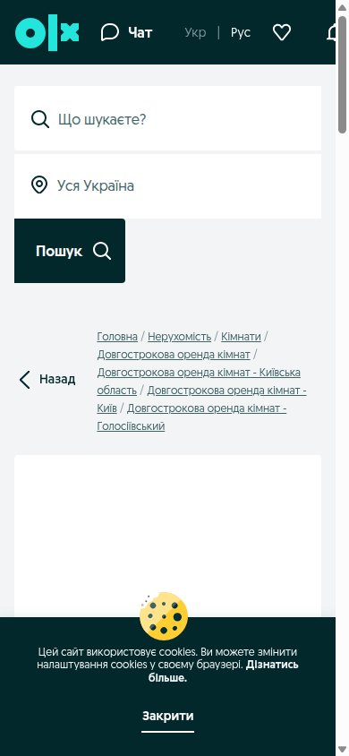
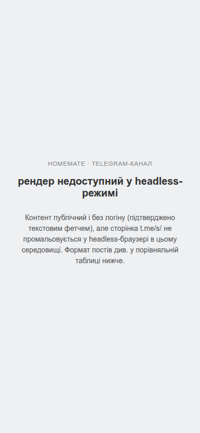
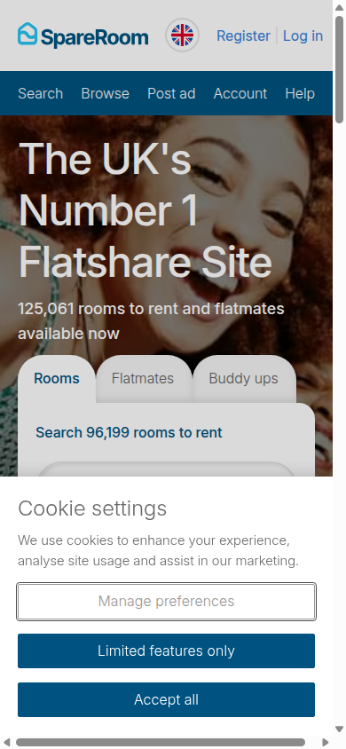
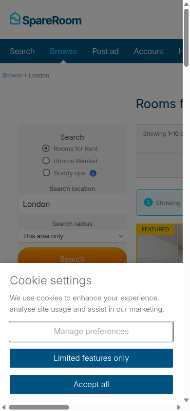
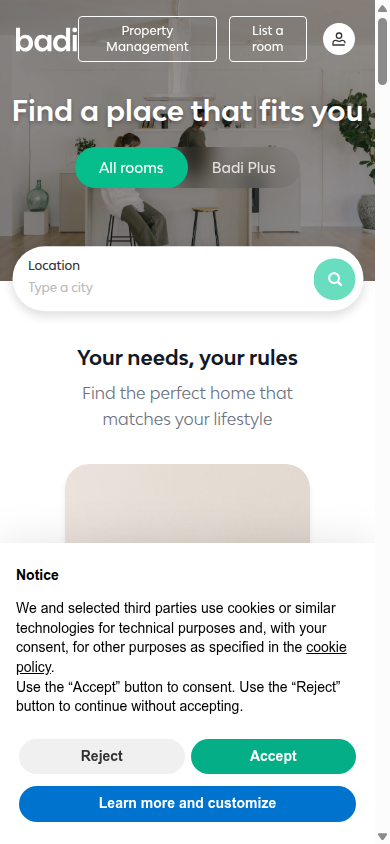
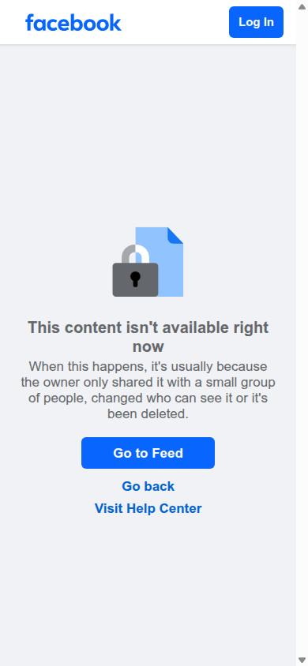

01Конкуренти
Матриця — п'ять конкурентів × п'ять осей
| Вісь | OLX.ua | HomeMate (Telegram) | Facebook-групи | SpareRoom | Badi |
|---|---|---|---|---|---|
| Аудиторія | Наймасовіша й найширша — усі, хто продає/шукає нерухомість в Україні; не сегментована під співмешкання чи вік S1 | Ті, хто вже в Telegram-екосистемі пошуку житла в Києві; неформалізована, часто студенти S3 | Користувачі груп за районом/темою; ширша демографія, включно з експатами — дані не підтверджені (контент за логіном) S7 | 17M+ зареєстрованих користувачів, фокус на великі міста S8 | Міжнародна, база в Іспанії, мобільний-перший — дані не підтверджені щодо точних цифр S6 |
| Основа продукту | Універсальний класифайд нерухомості: фото, ціна, район, площа S1 | Стрічка постів у каналі — вільний текст без полів і карток S3 | Пост + коментарі, соціальний контекст навколо оголошення S7 | Двостороннє структуроване оголошення: Rooms / Flatmates / Buddy ups S4 | Профілі + оголошення кімнат з фільтрами способу життя S6 |
| Ключовий механізм | Пошук за фільтрами (район, ціна, площа, поверх), без матчингу S1 | Публікація через адміна → читач гортає стрічку → пише в приват S3 | Соціальний скоринг через спільних друзів і публічний профіль автора — дані не підтверджені (окремого джерела немає) | Фільтри за локацією/бюджетом/датою заїзду, свідомо без заглиблення в сумісність способу життя S9 | Фільтри за побутовими умовами (тварини, пари) + «Lister Score» від верифікації й швидкості відповіді S10 |
| Довіра | Ознак верифікації орендодавця чи обов'язкового логіну для контактів не виявлено S1 | Відсутня модерація чи верифікація в самих постах S3 | Непряма — через видимість профілю автора; механіка не задокументована, дані не підтверджені | Команда живих модераторів перевіряє оголошення 7 днів/тиждень; Trustpilot 4.7/5 S4 | Запит ID/паспорта перед бронюванням, захищені платежі S6, публічний Lister Score S10 |
| Монетизація | Платне просування оголошень — search_reason=promoted в DOM сторінки пошуку S1 |
Дані не підтверджені — платних елементів у зафетченому контенті не виявлено | Дані не підтверджені у контексті самої групи | Базово безкоштовно; преміум $6–25/міс за розширені інструменти S9 | Badi Plus — paywall саме на спілкування: необмежений чат і контакт з переглядачами платні S10 |
Три спільні патерни ринку
- Ніхто не робить справжній алгоритмічний матчинг за замовчуванням. SpareRoom і Roomster відкрито визнають, що пошук — це фільтри за локацією/бюджетом/датою без заглиблення в сумісність способу життя S9; Badi заявляє «підбір» на головній S6, але деталей алгоритму не розкриває, а реальний trust-механізм («Lister Score») будується на верифікації й швидкості відповіді, а не на сумісності S10.
- Довіра завжди винесена за межі «просто даних». SpareRoom платить команді людей за ручну модерацію 7 днів на тиждень S4; Badi монетизує саме комунікацію і вимагає ID перед бронюванням S10; неформальні канали (Telegram, Facebook) структурно покладаються на соціальний контекст спільноти S3 S7 — ніде довіра не з'являється сама з профілю.
- Двостороння модель контенту — вже стандарт. SpareRoom явно розділяє «Rooms / Flatmates / Buddy ups» на головній S4; HomeMate змішує в одній стрічці і «шукаю», і «здам» S3.
Три відмінності
- Хто платить і за що. OLX монетизує просування оголошення S1; Badi монетизує саме спілкування S10; SpareRoom монетизує розширені інструменти, $6–25/міс S9; для HomeMate і Facebook-груп монетизація — дані не підтверджені.
- Рівень структурованості даних. Від вільного тексту без жодних полів (HomeMate S3) до повністю структурованих карток із фільтрами (OLX S1, SpareRoom S4 S5, Badi S6).
- Хто несе тягар верифікації. У Badi — сам продукт (ID, Lister Score) S10; у SpareRoom — окрема команда людей-модераторів S4; в OLX, Telegram, Facebook вбудованого механізму верифікації не виявлено S1 S3 або дані не підтверджені S7.
Скріни







02Бенчмарк
Топ-3 механізми для MVP
Людська модерація оголошень перед публікацією
Механізм: команда вручну переглядає кожне оголошення, 7 днів на тиждень S4.
Чому підходить Кутку: MVP стартує з малим обсягом оголошень у Києві — ручна перевірка операційно посильна і дає видиму, зрозумілу підставу довіри, узгоджену з ціллю «зняти тертя й ризик» з брифу S12.
Публічний бейдж довіри, що росте від підтверджених дій
Механізм: Lister Score в Badi підвищується від верифікованих даних, банківських реквізитів, швидкості відповіді — не від самодекларації S10.
Чому підходить: прямо відповідає вже ухваленому в брифі рішенню про «бейджі перевірено» і відгуки після заселення S12.
Безкоштовний необмежений вбудований чат
Механізм: SpareRoom пропонує безкоштовний обмін повідомленнями як частину базового продукту S4, і за незалежним оглядом саме це називають драйвером довіри й обсягу на противагу платним аналогам S9.
Чому підходить: узгоджується з рішенням брифу про безкоштовний старт і вбудований чат без бар'єрів S12.
Один, що не спрацює
Paywall на спілкування (модель Badi Plus / Roomster)
Механізм: щоб писати необмеженій кількості людей або відповідати переглядачам оголошення, у Badi потрібна платна підписка Badi Plus S10; у Roomster повідомлення взагалі вимагають підписки ~$15/міс S9.
Чому не спрацює: прямо суперечить рішенню брифу про безкоштовний старт і чат без бар'єрів S12; додатково, за незалежним оглядом, користувачі Roomster відкрито скаржаться саме на цей paywall як на головний недолік S9 — задокументований негативний сигнал з ринку.
03Патерни
Обраний патерн: Пошук і фільтри (маркетплейс)
Джерело аналізу: повний розбір п'яти принципово різних UX-патернів підбору співмешканця — свайп-колода, пошук і фільтри, алгоритмічний скор сумісності, довірена мережа спільноти, реверсивний пост — крок 05–06, артефакт «П'ять патернів підбору сусіда» S13.
Чому саме він під наш контекст
- Контентна модель Кутка вже двостороння за брифом (кімнати + профілі шукачів) S12 — це нативна структура для пошуку/фільтрів. Те саме підтверджує й SpareRoom, розділяючи Rooms/Flatmates окремими вкладками S4.
- Бриф прямо ухвалив «тільки фільтри, без алгоритмічного скору сумісності» S12 — рішення вже прийнято, і воно узгоджується зі ставкою рішення (жити разом місяцями): люди хочуть порівнювати й читати профілі, а не отримувати вердикт за секунду S13.
- Малий пул оголошень на старті. Список із фільтрами деградує плавно навіть при десятку кімнат, тоді як свайп-колода чи алгоритмічний скор потребують об'єму даних/кандидатів, якого в молодого продукту ще немає S13.
04Висновки
Прогалина 1
Хто на старті бере на себе ручну модерацію і скільки оголошень/день реально перевірити.
Гіпотеза: без виділеної ролі (хоч часткової) модерація стане вузьким горлом уже за перших 20–30 оголошень на тиждень, і якість видачі почне падати ще до масштабування.
Джерело: БЕНЧМАРК (людська модерація, SpareRoom) + КОНКУРЕНТИ (відмінність №3)
Прогалина 2
Політика «живості» оголошень (чи протухають вони автоматично) не визначена.
Гіпотеза: без авто-архівації чи підтвердження активності Куток успадкує головну проблему Telegram-каналів — застарілі пости без сигналу актуальності — і швидко втратить довіру до якості видачі.
Джерело: КОНКУРЕНТИ (оголошення OLX зникло між заходами; HomeMate — стрічка без модерації застарілих постів)
Прогалина 3
Точна структура й формула trust-бейджа/скору для Кутка не визначена — у брифі лише сама ідея «бейджі перевірено» S12.
Гіпотеза: без чіткої, прозорої формули (що саме підвищує бейдж) користувачі не довірятимуть йому більше, ніж голому профілю — Куток ризикує повторити слабкість «чорної скриньки», якої свідомо уникнув, відмовившись від алгоритмічного скору.
Джерело: БЕНЧМАРК (публічний бейдж довіри, Lister Score) + ПАТЕРНИ (відмова від алгоритмічного скору саме через непрозорість)
Прогалина 4
Cold-start-стратегія (як наповнити перший контент) не вирішена — залишається відкритим питанням у самому брифі S12.
Гіпотеза: органічний ріст «широким Києвом» без стартового посіву через нішеві спільноти (студмістечка, роботодавці, ЖК) буде повільнішим і дорожчим, ніж партнерський посів — саме так уже тримається живий ринок («КНУсусіди» тримаються на приналежності до вишу) S11.
Джерело: ПАТЕРНИ (другий вибір «довірена мережа спільноти», за умови X) + КОНКУРЕНТИ (крок 03, групи Хард/Софт)
Прогалина 5
Монетизаційна модель після безкоштовного старту не визначена, а найближчий за структурою конкурент монетизує саме те, що Куток свідомо лишає безкоштовним.
Гіпотеза: якщо Куток колись захоче монетизуватися, копіювати paywall-на-чат (модель Badi) буде помилкою; імовірніші кандидати — платне просування оголошень (модель OLX) або розширені інструменти для активних користувачів (модель SpareRoom), що не заважають базовій довірі.
Джерело: БЕНЧМАРК («один, що не спрацює») + КОНКУРЕНТИ (відмінність №1)
05Джерела
| # | Джерело | Тип |
|---|---|---|
| S1 | OLX.ua — пошук «підселення», Київ | Web fetch + скрін 01 |
| S2 | OLX.ua — картка оголошення | Скрін 02 (оголошення згодом зникло — власне спостереження про плинність) |
| S3 | HomeMate — Telegram-канал | Web fetch (текст); скрін не вдалося зняти технічно — скрін 03 |
| S4 | SpareRoom — головна сторінка | Web fetch + скрін 04 |
| S5 | SpareRoom — пошук, Лондон | Скрін 05 |
| S6 | Badi — головна сторінка | Web fetch + скрін 06 |
| S7 | Facebook-група — пост | Скрін 07 — підтверджує лише обмеження доступу, не контент |
| S8 | Web-пошук: аудиторія SpareRoom (17M+ зареєстрованих користувачів) | Агрегований результат пошуку, окремої статті не збережено |
| S9 | CoHabby — «Best Roommate Finder Apps 2026: Honest Comparison» | UX-розбір третьої сторони (SpareRoom, Roomster) |
| S10 | Badi / Badi Plus — умови використання | Первинне джерело (Lister Score, верифікація ID, Badi Plus) |
| S11 | «КНУсусіди» — Telegram | Web-пошук, крок 03 |
| S12 | CLAUDE.md — продуктовий бриф Кутка | Внутрішній документ проєкту |
| S13 | Артефакт «П'ять патернів підбору сусіда» (крок 05–06) | Внутрішній аналітичний документ цієї сесії, на основі CLAUDE.md |